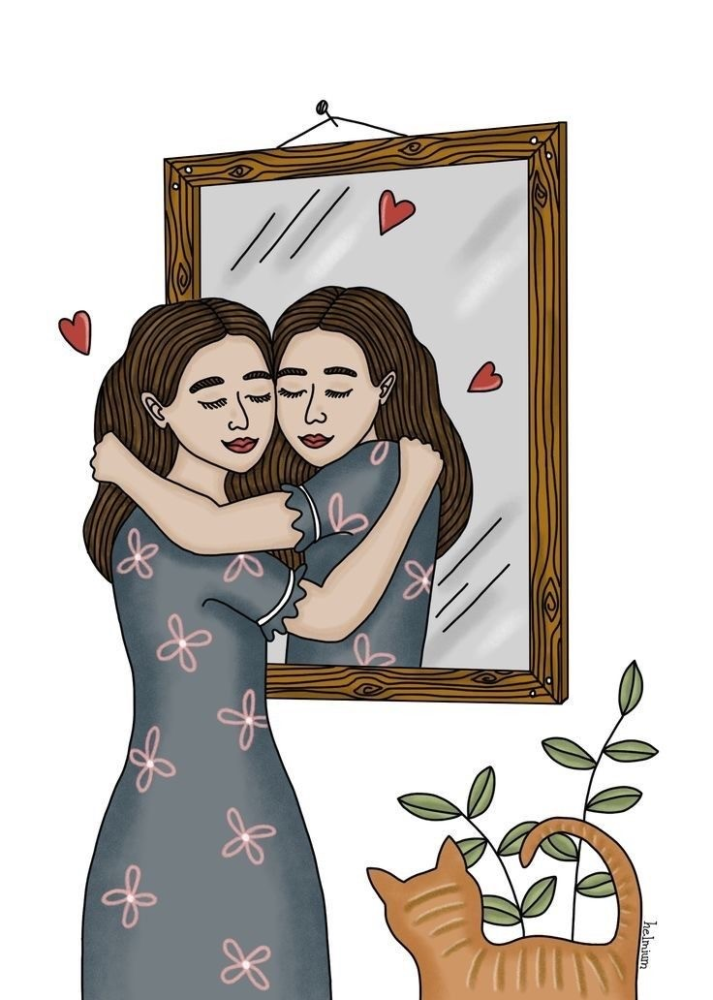

Ter amor própio é o caminho para a felicidade...
A aceitação é um processo muito difícil que a maioria da vezes leva tempo, muitas pessoas tem dificuldade em aceitar seus defeitos,e fracassos.
Amar a si mesmo é entender que somos imperfeito,amar a si mesmo é ter autocuidado, é ter auto- estima.
Quando falamos de amor própio não estamos falando somente da beleza, mais sim da saúde mental, valorização,autocuidado e uma boa alimentação.
É necessário falarmos sobre esse assuntos principalmente nós mulheres que sofremos mais com isso,na maioria das vezes nos comparamos com outras pessoas ou tentamos ser igual a alguem, mais a verdade é que somos todos iguais e devemos nos aceitar do jeito que somos.
Cultivar o amor própio e a auto-estima requer um trabalho bem consistente, começa com a aceitação de quem somos.
É importante desafiar pensamentos negativos, e substituir-los por pensamentos positivos.
Também é essencial cuidar de nosso bem-estar físico.